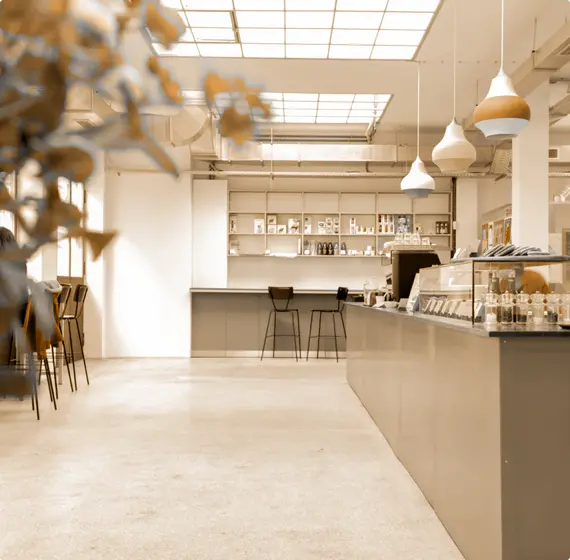

  <section class="history">
    <div class="container">
      <div class="history__wrapper">
        <div class="history__image">
          <div class="history__image-wrapper side-image__wrapper">
            
            <div class="history__image-dishes side-image"></div>
          </div>
        </div>
        <div class="history__content">
          <h3 class="history__subtitle subtitle">Discover</h3>
          <h2 class="history__title title">Our History</h2>
          <p class="history__text text">
            A peep at some distant orb has power to raise and purify our thoughts like a strain of sacred music, or a noble picture, or a passage from the grander poets. It always does one good.
          </p>
          <a href="#" class="button btn-fill">Read more</a>
        </div>
      </div>
    </div>
  </section>